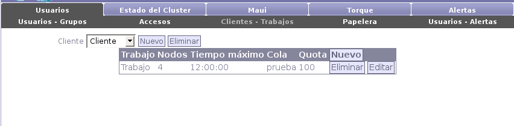

Next: Papelera Up: Usuarios Previous: Accesos Contents

Para crear un nuevo trabajo es necesario tener por lo menos un cliente creado. Para esto se deberá presionar el botón ``Nuevo'' (a la derecha de la lista de clientes). A continuación se mostrarán los campos a llenar:
En cualquier momento el administrador podrá eliminar tanto los trabajos como los clientes. Si elimina un trabajo, ningún usuario tendrá acceso al mismo, pero este podrá ser restaurado desde la papelera. Por otro lado, si elimina un cliente, será eliminado físicamente junto con sus respectivos trabajos, incluyendo los archivos guardados en disco.
Santiago Iturriaga 2008-05-26